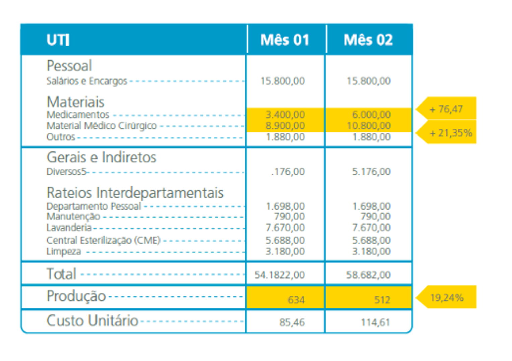

Temos com ele uma visão geral dos itens de custos por CC. Os custos são agrupados por tipo de item e os custos dos rateios recebidos dos outros CC.
| Exemplo C.C Exames (+) Custos Diretos - R$ 60,00 (+) Custos Indiretos - R$ 40,00 (+) Rateios de Outros C.C - R$ 20,00 |
| Custo Total - R$ 120,00 Número de Exames Total - 12 (José - 2 exames - R$ 20,00 Maria - 4 exames - R$ 40,00 Pedro - 5 exames - R$ 50,00) |
| Custo Unitário - R$ 10,00 |
O sistema de Gerenciamento dos Custos Hospitalares é uma ferramenta de gestão alinhada ao Mapa Estratégico da FHEMIG com o objetivo maior de possibilitar “Vida Saudável”.
As análises gerenciais podem ser conduzidas tomando-se como base as informações de custos, sintetizadas nos relatórios emitidos mensalmente pelas UA.
